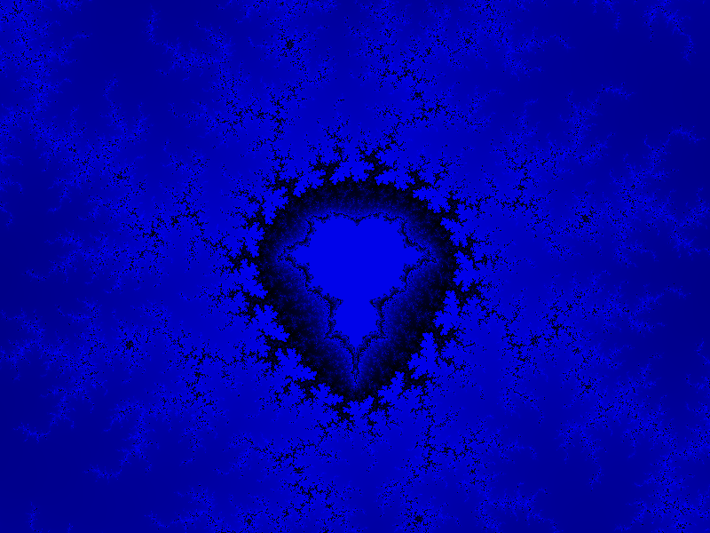
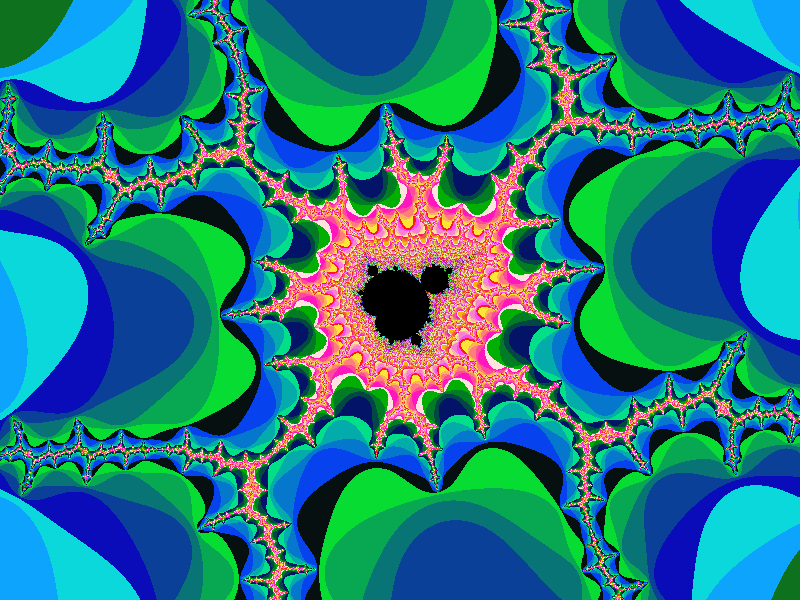

Fractal programming
Below is a similar project I coded up in JavaScript in college so I could put it on webpages. Go ahead and click around, see if you can find some cool patterns! (Hint, the program slows down if you have lots of the big black areas in the frame. Because of the escape-time algorithm I’m using, you have to loop up to 1,000 for every pixel in the dark areas and clearly that can take a while)
I really liked videos like this on Youtube where it would render a video of exploring cool parts of fractals. After graduating college I redid the project in python with this feature so I could make similar videos. Now that I would be rendering thousands of frames of fractals, however, I opted to learn some CUDA and offload the heavy lifting to my GPU. This has massive performance gains, rendering a 1080 x 900 image with XXX specs takes YYYY seconds in pure Python, and ZZZZ seconds utilizing a GPU. TODO FIX SPECS
The next challenge of course was turning all of those image frames into a video. Usually I like to keep my projects platform independent, so when my research pointed to ffmpeg I got a little shy. I chose instead to try OpenCV, which was a massive hassle. While it is a very powerful and impressive tool, it was a massive overkill for what I was trying to do, and also took a fair amount of work and configuration to download and compile properly.
I did get it working, though, and produced some nice videos like this: TODO ADD GIF
They’re still a little choppy, though. Not to mention the coloring is very basic escape-time stuff. This leads to very discrete bands in the color instead of the nice color gradients like you see here TODO LINK HERE.
In order to implement that nice gradient coloring, usually people take this approach BLAH BLAH BLAH BLAH.
Tech used:
- Python
- Pycuda
- OpenCV
- CudaToolKit
Here's some other cool images I've made with my own fractal programs:



❮
❯